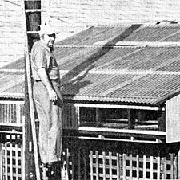
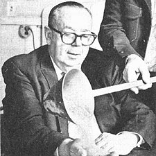
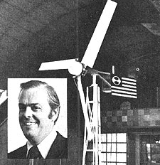

Selected doin's of well-known MOTHER-types from around the world.
Not many U.S. Congressmen can claim to have an "integral urban district office" complete with solar heating and cooling, a lean-to greenhouse, and bee-hives. Representative GEORGE E. BROWN, JR. (D-Calif.) can, however . . . because he does have just such office facilities.
Two years ago-when Congressman Brown decided that he wanted solar heating for his Colton, California office building (an old house located in a semi-residential part of town)-he asked his staff to design and install a low-cost, low-technology heating system by themselves. He told his aides that they were free to seek expert advice, but that they should attempt to do as much of the actual construction as possible.
So while Brown was away in Washington, his staffers outfitted the building with an air-handling, "active" solar heating setup that employs a single large wood-and-fiberglass solar collector and a bin loaded with 13 tons of rock for heat storage . . . a setup that-so far-has provided virtually 100% of the office building's winter heating needs. (The same system can be used to provide cooling during the summer, although-because of the desert-like temperatures that hit the area during the summer months-supplemental cooling must also be used.)
In back of the aging office structure, Brown's aides built a lean-to "solar greenhouse" that furnishes the main house with additional solar heating and provides the Congressman's staff with a year-round supply of fresh vegetables.
A year or so ago, Brown's staff members decided they wanted to "raise" honey as well as vegetables . . . so they "coaxed" a swarm of bees into an empty hive, and within six months harvested 100 pounds of the golden sweetener!
Because of the great amount of public interest in these and other of the Congressman's activities, Brown recently encouraged the Agricultural Division of the University of California's Cooperative Extension to apply for federal funding to open a community food preservation center in nearby Riverside, California. The application was approved.
If it has to do with living-better-for-less alternatives, chances are the Honorable George E. Brown, Jr. knows about it . . . or is already doing it!- Linda Martin.
Retired Naval Commander SAMUEL FREEDMAN of San Diego, California believes he's discovered an energy source capable of replacing (to a large extent) petroleum . . . a fuel that's available throughout the world in large supply, would create no pollution problems, and is literally "dirt cheap".
After five years of heat transfer research, Freedman has found that ordinary earth, crushed rock, and sand can all be burned to obtain energy. The physicist says he has yet to encounter any kind of earth that WON'T burn and that-surprisingly-sand has a greater heat release capability than wood or coal. (At last count, Freedman had tested some 289 different types of rock, sand, soil, mine tailings, etc.-including mineral deposits from 16 states and five foreign countries-all of which yielded exothermic heat in the "blue flame" region of 2,000 to 3,000° F.)
Commander Freedman's heat-extraction procedure involves igniting a sample of earth, rock, etc., above a bath of molten metal. Since the combustion process-in this case-involves heat transference, rather than the reduction of one substance to another, there are no noxious by-products . . . no smoke, no fumes. And Freedman maintains that the bulk of the fuel material could be returned-after use-to its original location.
If the Commander is right, widespread application of his process could mean significant reductions in the cost of electricity, reduced dependence on foreign oil, and greater access to trace metals . . . all with little or no adverse environmental impact. According to Sam Freedman, a single "cubic acre" of earth would satisfy all of southern California's electricity needs for a full year!- Terry Tucker Francis.
The answer, my friend, is blowin' in the wind. Or at least, it is for a few more people, thanks to Dr. JOHN BLOSSOM and his company, Energy Research Products Inc. of Toledo, Ohio.
Dr. Blossom-the chiropractic physician who designed and manufactured the first zero-clearance "in the wall" fireplaces 24 years ago-is back on the energy scene now with a significantly different design in wind-generating plants.
Dr. Blossom's "Wind Genni" departs from conventional designs in that the generator (or alternator, as the case may be) is mounted midway up the tower, rather than at the top with the rotor and wind vane. In addition, the electricity produced by the Wind Genni can either be stored in batteries or fed directly into the house (via a phase-lock converter) along with ordinary power company"juice". In the latter case, when the house requires more electricity than the Genni can provide (as, for instance, during a period of light-or no-wind), the power company makes up the difference.
The good doctor's wind generator produces three kilowatts of power in 16-20 mph winds and comes complete with phase-lock inverter for $3,000. (That includes installation, too, if you happen to live in Wisconsin, Minnesota, Michigan, Ohio, Illinois, Indiana, Pennsylvania, or New York.)
For more info, drop Dr. Blossom a line in care of Energy Research Products Inc., 508 S. Byrne Rd., Toledo, Ohio 43609 . . . or drop by the shop in person.- Travis Brock.
Are you up on the latest doings of someone (such as any of the innovative pioneers featured in MOTHER'S Plowboy Interviews) who's achieved recognition in a field regularly covered by this magazine' If so, send us a lightly written 200-word report on that person (along with a snappy black-and-white photograph), and-providing your report is used in NEWSWORTHIES-we'll gladly send you a flat $50 ($25 without the photo). Send contributions to NEWSWORTHIES Editor, THE Mother Earth News (restricted) , P.O. Box 70, Hendersonville, N.C. 28739.
|
 PHOTO COURTESY OF THE SAN DIEGO UNION SAMUEL FREEDMAN |
 |
 |